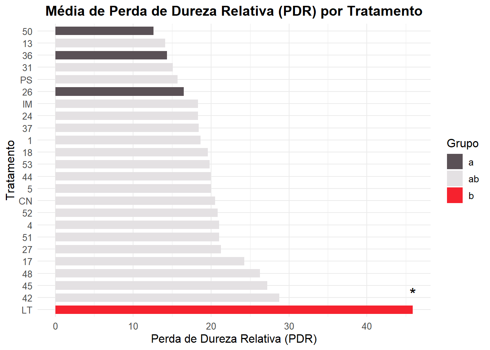

# === 0. Carregar pacotes ===
library(readxl)
library(dplyr)
Anexando pacote: 'dplyr'Os seguintes objetos são mascarados por 'package:stats':
filter, lagOs seguintes objetos são mascarados por 'package:base':
intersect, setdiff, setequal, unionlibrary(ggplot2)
library(multcompView)
library(agricolae)
library(FSA)## FSA v0.10.0. See citation('FSA') if used in publication.
## Run fishR() for related website and fishR('IFAR') for related book.library(car)Carregando pacotes exigidos: carDataRegistered S3 methods overwritten by 'car':
method from
hist.boot FSA
confint.boot FSA
Anexando pacote: 'car'O seguinte objeto é mascarado por 'package:FSA':
bootCaseO seguinte objeto é mascarado por 'package:dplyr':
recodelibrary(Polychrome)
# === 1. Carregar os dados ===
dados <- read_excel("teste_deg.xlsx")
dados$tratamento <- as.factor(dados$tratamento)
# === 2. Função de análise completa ===
analise_variavel <- function(dados, variavel, y_label) {
dados_var <- dados %>% filter(!is.na(.data[[variavel]]))
formula <- as.formula(paste(variavel, "~ tratamento"))
modelo <- aov(formula, data = dados_var)
residuos <- residuals(modelo)
# === Testes de premissas ===
shapiro_result <- shapiro.test(residuos)
levene_result <- leveneTest(formula, data = dados_var)
shapiro_p <- shapiro_result$p.value
levene_p <- levene_result$`Pr(>F)`[1]
cat("\n=== Análise para", variavel, "===\n")
cat("→ Teste de Normalidade (Shapiro-Wilk):\n")
print(shapiro_result)
cat("\n→ Teste de Homocedasticidade (Levene):\n")
print(levene_result)
# === Diagnóstico visual dos resíduos ===
cat("\n→ Gráficos de diagnóstico dos resíduos\n")
par(mfrow = c(1, 2))
plot(residuos, main = paste("Resíduos -", variavel), ylab = "Resíduos")
abline(h = 0, col = "red", lty = 2)
qqnorm(residuos, main = paste("QQ-Plot -", variavel))
qqline(residuos, col = "red")
par(mfrow = c(1, 1))
# Caminho 1: Premissas atendidas → Scott-Knott
if (shapiro_p > 0.05 & levene_p > 0.05) {
cat("\n→ Premissas atendidas: usando ANOVA + Scott-Knott\n")
print(summary(modelo))
scott <- agricolae::scott.test(modelo, "tratamento", group = TRUE, console = TRUE)
letras_df <- scott$groups %>%
mutate(tratamento = rownames(.)) %>%
select(tratamento, grupo = groups)
# Caminho 2: Premissas violadas → Kruskal + Dunn
} else {
cat("\n→ Premissas violadas: usando Kruskal-Wallis + Dunn\n")
kruskal_res <- kruskal.test(formula, data = dados_var)
print(kruskal_res)
dunn <- dunnTest(formula, data = dados_var, method = "bonferroni")
comp <- dunn$res
tratamentos <- levels(dados_var$tratamento)
p_mat <- matrix(NA, nrow=length(tratamentos), ncol=length(tratamentos),
dimnames = list(tratamentos, tratamentos))
for (i in 1:nrow(comp)) {
pares <- strsplit(as.character(comp$Comparison[i]), " - ")[[1]]
p_valor <- comp$P.adj[i]
p_mat[pares[1], pares[2]] <- p_valor
p_mat[pares[2], pares[1]] <- p_valor
}
letras <- multcompLetters(p_mat, threshold = 0.05)
letras_df <- data.frame(tratamento = names(letras$Letters),
grupo = letras$Letters)
}
# === Calcular médias e unir com grupos ===
medias <- dados_var %>%
group_by(tratamento) %>%
summarise(media = mean(.data[[variavel]], na.rm = TRUE)) %>%
left_join(letras_df, by = "tratamento")
# === Identificar grupos únicos e marcar com asterisco ===
grupo_freq <- table(medias$grupo)
medias <- medias %>%
mutate(asterisco = ifelse(grupo_freq[grupo] == 1, "*", ""))
# === Ordenar tratamentos por média decrescente ===
medias <- medias %>%
arrange(desc(media)) %>%
mutate(tratamento = factor(tratamento, levels = tratamento))
# === Cores com Polychrome (36 cores com alto contraste) ===
grupos_unicos <- sort(unique(medias$grupo))
paleta <- palette36.colors(length(grupos_unicos))
cores <- setNames(paleta, grupos_unicos)
# === Gráfico ===
grafico <- ggplot(medias, aes(x = tratamento, y = media, fill = grupo)) +
geom_col(width = 0.7) +
geom_text(aes(label = asterisco), vjust = -0.8, size = 6, color = "black") +
scale_fill_manual(values = cores) +
labs(
title = paste("Média de", y_label, "por Tratamento"),
x = "Tratamento",
y = y_label,
fill = "Grupo"
) +
coord_flip() +
theme_minimal() +
theme(
text = element_text(size = 12),
plot.title = element_text(hjust = 0.5, face = "bold")
)
print(grafico)
}
# === 3. Rodar análises ===
analise_variavel(dados, "pm", "Perda de Massa (PM)")
=== Análise para pm ===
→ Teste de Normalidade (Shapiro-Wilk):
Shapiro-Wilk normality test
data: residuos
W = 0.94606, p-value = 3.228e-08
→ Teste de Homocedasticidade (Levene):
Levene's Test for Homogeneity of Variance (center = median)
Df F value Pr(>F)
group 23 4.3557 2.154e-09 ***
237
---
Signif. codes: 0 '***' 0.001 '**' 0.01 '*' 0.05 '.' 0.1 ' ' 1
→ Gráficos de diagnóstico dos resíduos
→ Premissas violadas: usando Kruskal-Wallis + Dunn
Kruskal-Wallis rank sum test
data: pm by tratamento
Kruskal-Wallis chi-squared = 109.39, df = 23, p-value = 3.229e-13analise_variavel(dados, "pdr", "Perda de Dureza Relativa (PDR)")
=== Análise para pdr ===
→ Teste de Normalidade (Shapiro-Wilk):
Shapiro-Wilk normality test
data: residuos
W = 0.93213, p-value = 1.413e-09
→ Teste de Homocedasticidade (Levene):
Levene's Test for Homogeneity of Variance (center = median)
Df F value Pr(>F)
group 23 0.8714 0.6371
237
→ Gráficos de diagnóstico dos resíduos
→ Premissas violadas: usando Kruskal-Wallis + Dunn
Kruskal-Wallis rank sum test
data: pdr by tratamento
Kruskal-Wallis chi-squared = 36.849, df = 23, p-value = 0.03371
analise_variavel(dados, "pds", "Perda de Densidade Aparente (PDS)")
=== Análise para pds ===
→ Teste de Normalidade (Shapiro-Wilk):
Shapiro-Wilk normality test
data: residuos
W = 0.94844, p-value = 6.066e-08
→ Teste de Homocedasticidade (Levene):
Levene's Test for Homogeneity of Variance (center = median)
Df F value Pr(>F)
group 23 5.0554 2.486e-11 ***
236
---
Signif. codes: 0 '***' 0.001 '**' 0.01 '*' 0.05 '.' 0.1 ' ' 1
→ Gráficos de diagnóstico dos resíduos
→ Premissas violadas: usando Kruskal-Wallis + Dunn
Kruskal-Wallis rank sum test
data: pds by tratamento
Kruskal-Wallis chi-squared = 108.57, df = 23, p-value = 4.509e-13